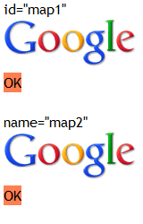
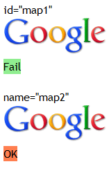

根据 HTML4.01 规范中的描述，MAP 元素的 name 属性指定了一个映射到 IMG 元素的名称。此时，IMG 元素必须通过 usemap 属性匹配关联的 MAP 元素的 name 属性值。
关于 MAP 与 IMG 元素的更多内容，请参考 HTML4.01 规范 13.6.1 Client-side image maps: the MAP and AREA elements 中的内容。
IE Opera 中，IMG 元素通过其 usemap 属性可以与 MAP 元素的 id 属性及 name 属性关联，而 Firefox Chrome Safari 中仅限于 MAP 元素的 name 属性。
若仅为 MAP 元素设置了 id 属性并欲通过 IMG 元素的 usemap 属性使两者关联，则在 Firefox Chrome Safari 中 MAP 元素内定义的超链接将无法响应。
| IE6 IE7 IE8 Opera |
|---|
分析以下代码：
<!DOCTYPE html> <html> <head> </head> <body style="font:16px 'Trebuchet
MS';"> id="map1"<br /> <img src="google.gif" border="0"
usemap="#map1" /> <map id="map1"> <area href="javascript:void
0;" onclick="document.getElementById('info1').innerHTML='<span
style=\'background:coral\'>OK</span>';" shape="rect"
coords="0,0,150,55" /> </map> <div id="info1"><span
style="background:lightgreen">Fail</span></div> <br />
name="map2"<br /> <img src="google.gif" border="0"
usemap="#map2" /> <map name="map2"> <area href="javascript:void
0;" onclick="document.getElementById('info2').innerHTML='<span
style=\'background:coral\'>OK</span>';" shape="rect"
coords="0,0,150,55" /> </map> <div id="info2"><span
style="background:lightgreen">Fail</span></div> </body>
</html>
上面代码包含两组，每组均为一个 IMG 元素及一个 MAP 元素，IMG 元素的 usemap 属性值为 "#map"，而两组的区别为 MAP 元素的 id 属性与 name 属性，MAP 元素内的 AREA 元素定义了响应区域。鼠标点击图片。
这段代码在不同的浏览器环境中的表现：
| IE Opera | Firefox Chrome Safari | |
|---|---|---|
| 第一组设定 id 属性，鼠标点击图片后 | 可以响应 | 无法响应 |
| 第二组设定 name 属性，鼠标点击图片后 | 可以响应 | 可以响应 |
| 截图 |  |  |
可见：
在 IE Opera 中，仅仅为 MAP 元素设定 id 属性即可使其与设定了相应的 usemap 属性值的 IMG 元素相关联。
而所有浏览器均支持 HTML4.01 规范所述，IMG 元素通过 usemap 属性匹配关联的 MAP 元素的 name 属性值。
若需要 IMG 元素与 MAP 元素相关联，注意通过 IMG 元素的 usemap 属性关联的 MAP 元素的 name 属性的值。
| 操作系统版本: | Windows 7 Ultimate build 7600 |
|---|---|
| 浏览器版本: |
IE6
IE7 IE8 Firefox 3.6.10 Chrome 7.0.517.17 dev Safari 5.0.2 Opera 10.62 |
| 测试页面: | map.html |
| 本文更新时间: | 2010-09-28 |
IMG MAP name id usemap 关联 图片 链接 区域